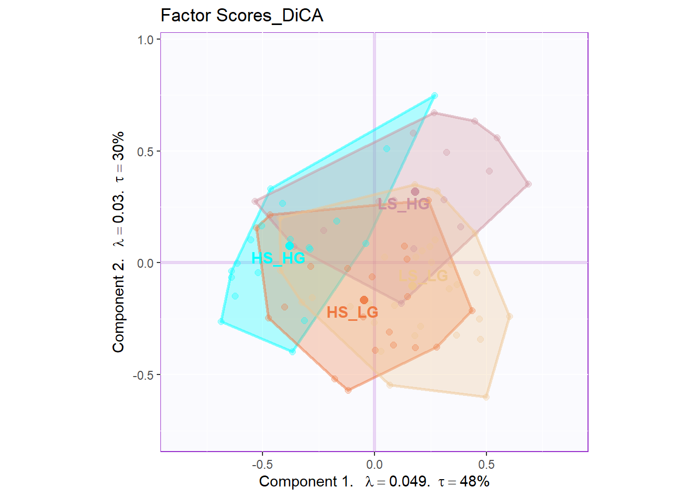
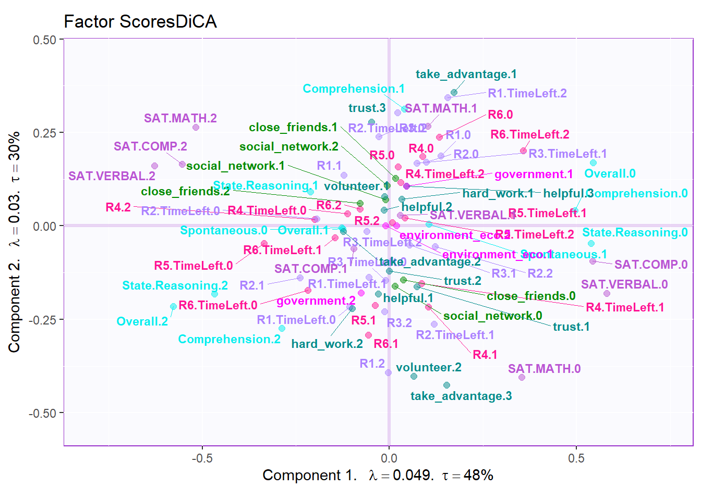
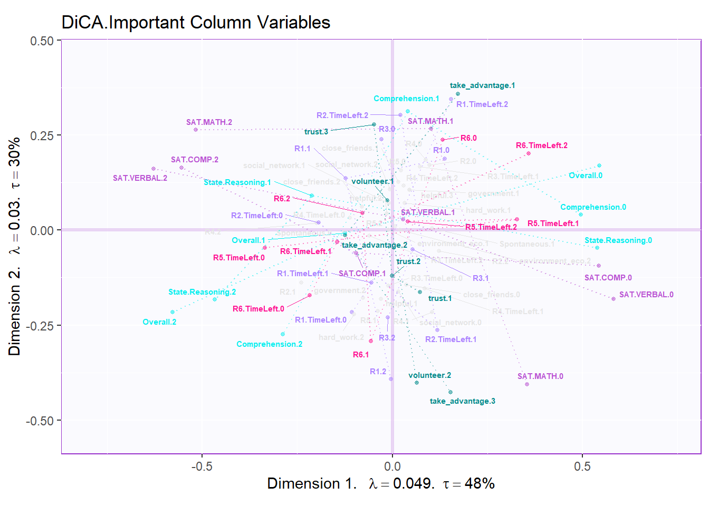
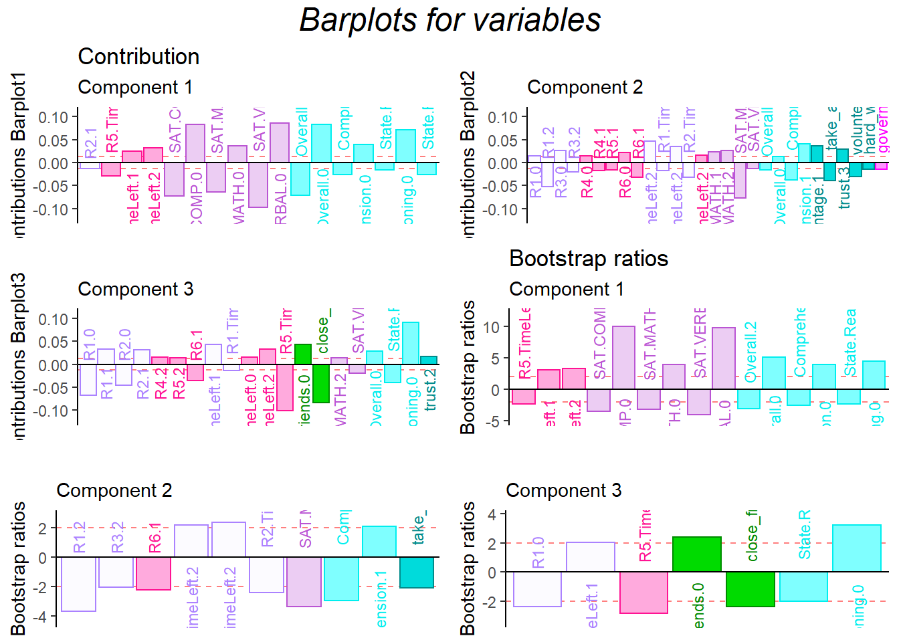
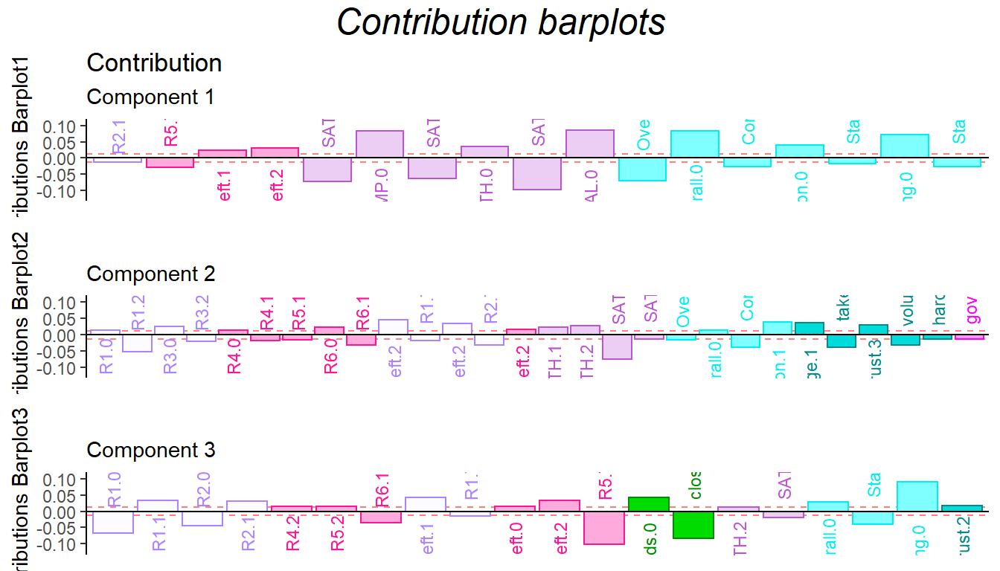

Chapter 6 Discriminant Correspondence Analysis
6.1 Introdcution of DiCA
As we can know from the name, DiCA is an extensional branch of CA. The goal of DiCA is always categorize observation into different clusters. Sometimes we will make comparision between BADA and DiCA. An easy way to distinguish the two methods is that BADA is used with quantitative variables and DiCA is used with qualitative variable.
In this example, we will used quantitative version of our main data set to do the DiCA analysis. For more info about the main data set, you can check data intro part in this book 3.1.
In the data preprocessing stage, we have a difficulty here: The global_warming variable cannot be included into our inference so I have to drop it in my subsequent analysis. The main reason could be that the distribution of global_warming are too skewed.
# import data
# data set: bins.data.to.use.sup
# design: exp.neg \ exp.pos
# Cannot analyze this variables, so I have to drop it
DiCA.raw.data <- select(bins.exp.neg, c(-"global_warming"))
res.DiCA <- tepDICA(DATA=DiCA.raw.data[,7:34],
DESIGN = exp.neg$group, make_data_nominal = TRUE,
symmetric = TRUE ,
graphs = FALSE)
res.DiCA.inf <- tepDICA.inference.battery(DATA= DiCA.raw.data[,7:34],
DESIGN = exp.neg$group,
make_data_nominal = TRUE,
symmetric = TRUE ,
graphs = FALSE,
test.iters = 100)[1] "It is estimated that your iterations will take 0.05 minutes."
===========================================================================As usual, I will prepare all the matrices and parameters for plotting usage.
fs <- res.DiCA$TExPosition.Data$fi
fj <- res.DiCA$TExPosition.Data$fj
eigs <- res.DiCA$TExPosition.Data$eigs
tau <- res.DiCA$TExPosition.Data$t
cj <- res.DiCA$TExPosition.Data$cj
p.vals <- res.DiCA.inf$Inference.Data$components$p.vals
eigs.permu <- res.DiCA.inf$Inference.Data$components$eigs.perm
boot.ratios <- res.DiCA.inf$Inference.Data$boot.data$fj.boot.data$tests$boot.ratios
fii <- res.DiCA$TExPosition.Data$fii6.2 Histgram of Binning Variables
I will use bins variable in this example instead of the continuous data table. If you are interested in the details about how I bin these variables, please see the functions Bins_Helper2.8

Figure 6.1: Multiple Histgram of Binning Data
6.3 Heatmap
In the heatmap, I used a trick to get means and scale them in rows. As I can know from the results, The High_High group (high social intelligence and high general intelligence) will be positively correlated to their SAT scores, and also the empathy ability. It is expected because I am using college GPA and emotional processing ability as the grouping variables. It is not surprised that they are correlated in pairs (GPA with SAT; empathy with emotional processing).
Don’t forget about the collective action, which is the main characters in this story: It is interesting that Low social intelligence but High general intelligence group has negative correlation with all the R-R6 game performance. It may imply something in our results.
# as.matrix((t(DESIGN %*% X)))
raw.dica <- scale(exp.neg[7:35],
scale = TRUE,
center = TRUE)
tmp <- aggregate(raw.dica, list(exp.neg$group),
mean)
mean.dica.raw <- tmp[,2:ncol(tmp)]
rownames(mean.dica.raw) <- tmp[,1]
dica.hm <- pheatmap(mat=mean.dica.raw,
fontsize_row =13,
fontsize =10,
cellheight = 10,
cellwidth = 10,
angle_col = 90,
cluster_rows = FALSE,
cluster_cols = FALSE)
dica.hm6.4 Scree Plot
From the scree plot, as usual, it will tell me how much variance explained by each component. From the permutation test, I can know I can reject the null hypothesis ??.
6.5 Factor Scores
In DiCA’s factor scores results, it is quite different with traditional PCA results. In PCA’s factor score, generally I will have row factor scores for each observation and column factor scores for each variables. However, since I used bin coding in DiCA, I will have several levels for each variables (0-low, 1-medium, 2-high). In the row factor scores plot, I chose hull mode over CI (confidence interval) to better illustrate the overlap among groups. For the column factor scores, as it is shown below, it is quite messy if we don’t select important variables. However, we can still see that the low levels and high levels are distributed in opposite directions. The line graph illustrated the linear relationship in levels for each important variable more clearly.
# get some color
# special version of dica
m.color.design.dica <- as.matrix(m.color.design[1:(nrow(m.color.design)-1)])
col4Levels <- data4PCCAR::coloringLevels(
rownames(fj), m.color.design.dica)
col4Labels <- col4Levels$color4Levels
# important variables
varCtr <- data4PCCAR::ctr4Variables(cj)
rownames(m.color.design.dica) <- rownames(varCtr)
var12 <- data4PCCAR::getImportantCtr(ctr = varCtr,
eig = eigs)
importantVar <- var12$importantCtr.1or2
col4ImportantVar <- m.color.design.dica
col4NS <-'gray90'
col4ImportantVar[!importantVar] <- col4NS
col4Levels.imp <- data4PCCAR::coloringLevels(rownames(fj),
col4ImportantVar)
# plot
plot.fs(exp.neg$group,
fs=fii,
eigs=eigs,
tau=tau,
d=1,
mode = "hull",
method = "DiCA")

# plot important line plot
labels4MCA <- createxyLabels.gen(x_axis = 1,
y_axis = 2,
lambda = eigs,
tau = round(tau))
fj.imp <- createFactorMap(X = fj,
axis1 = 1,
axis2 = 2,
title = "DiCA.Important Column Variables",
col.points = col4Levels.imp$color4Levels,
cex = 1,
col.labels = col4Levels.imp$color4Levels,
text.cex = 2,
force = 2)
fj.base <- fj.imp$zeMap + labels4MCA
zeNames <- getVarNames(rownames(fj))
importantsLabels <- zeNames$stripedNames %in%
zeNames$variableNames[importantVar]
fj.imp <- fj[importantsLabels,]
lines4J.imp <- addLines4MCA(fj.imp,
col4Var = col4Levels$color4Variables[which(importantVar)],
size = .5,
linetype = 3,
alpha = .5)
fj.dica <- fj.base + lines4J.imp
fj.dica
6.6 Confusion Matrix
As a statistical method designed to do discriminative jobs, DiCA could also provide us confusion matrix info. From the tables below, we know that the predictive accuracy for fixed effect is good but the generalized ability is poor. The fixed confusion accuracy can reach 72% but the random confusion matrix can only be 42%.
fixed.confusion <- res.DiCA.inf$Inference.Data$loo.data$fixed.confuse
random.confusion <- res.DiCA.inf$Inference.Data$loo.data$loo.confuse
fixed.acc <- res.DiCA.inf$Inference.Data$loo.data$fixed.acc
random.acc <- res.DiCA.inf$Inference.Data$loo.data$loo.acc
# rename
rownames(fixed.confusion) <- sub("[[:punct:]]","",
rownames(fixed.confusion))
rownames(random.confusion) <- sub("[[:punct:]]","",
rownames(random.confusion))
colnames(fixed.confusion)<- sub("[[:punct:]]","",
colnames(fixed.confusion))
colnames(random.confusion)<- sub("[[:punct:]]","",
colnames(random.confusion))
rownames(fixed.confusion) <- paste0(rownames(fixed.confusion),
".predicted")
colnames(fixed.confusion) <- paste0(colnames(fixed.confusion),
".actual")
# print table and accurarcy
kable(fixed.confusion,
caption = "Fixed Confustion Matrix")| LS_LG.actual | HS_LG.actual | LS_HG.actual | HS_HG.actual | |
|---|---|---|---|---|
| LS_LG.predicted | 21 | 3 | 2 | 1 |
| HS_LG.predicted | 4 | 14 | 0 | 0 |
| LS_HG.predicted | 2 | 1 | 11 | 2 |
| HS_HG.predicted | 4 | 2 | 3 | 16 |
fixed accurarcy: 0.7209302| LS_LG.actual | HS_LG.actual | LS_HG.actual | HS_HG.actual | |
|---|---|---|---|---|
| LS_LG.predicted | 16 | 10 | 5 | 2 |
| HS_LG.predicted | 4 | 2 | 1 | 3 |
| LS_HG.predicted | 7 | 2 | 7 | 3 |
| HS_HG.predicted | 4 | 6 | 3 | 11 |
random accurarcy: 0.41860476.7 Contribution and Bootstrap Ratio Barplots
For the contribution barplot, I focused on the first three components and the important variables instead of all the variables. From the component2, we can know that the high performance of first half game (R1.high and R3.high) is related with high Math ability, low comprehension and high take_advantage. It is reasonable because at the beginning stage, everyone is not much familiar with how the game played (although there are practice session) and everyone in the team is stranger. The situation is better through game going (R4.high and R5.high have same direction with trust and low take_advantage).
In conclusion, from the DiCA results, the relationship between each level of collective game playing and personality are revealed. However, since the data set is a quantitative data instead of qualitative data, I may expect more on BADA’s result in the following chapter.
# Computational Convenience: using my function:
plot.cb(cj,
fj,
col=col4Labels,
boot.ratios,
signifOnly = TRUE,
fig = 3,
horizontal = TRUE,
colrow = "row",
fontsize = 3)
signed.ctrJ <- cj * sign(fj)
laDim = 1
ctrJ.1 <- PrettyBarPlot2(signed.ctrJ[,laDim],
threshold = 1 / NROW(signed.ctrJ),
font.size = 3,
signifOnly = TRUE,
horizontal = TRUE,
color4bar = col4Labels,
main = 'Variable Contributions (Signed)',
ylab = paste0('Contributions Barplot',
laDim),
ylim = c(1.2*min(signed.ctrJ),
1.2*max(signed.ctrJ))
) + ggtitle("Contribution",subtitle = paste0('Component ',
laDim))
### plot contributions for component 2
laDim =2
ctrJ.2 <- PrettyBarPlot2(signed.ctrJ[,laDim],
threshold = 1 / NROW(signed.ctrJ),
font.size = 3,
color4bar = col4Labels,
signifOnly =TRUE,
horizontal = TRUE,
main = 'Variable Contributions (Signed)',
ylab = paste0('Contributions Barplot',
laDim),
ylim = c(1.2*min(signed.ctrJ),
1.2*max(signed.ctrJ))
)+ ggtitle("",subtitle = paste0('Component ', laDim))
laDim =3
ctrJ.3 <- PrettyBarPlot2(signed.ctrJ[,laDim],
threshold = 1 / NROW(signed.ctrJ),
font.size = 3,
color4bar = col4Labels, # we need hex code
signifOnly = TRUE,
horizontal = TRUE,
main = 'Variable Contributions (Signed)',
ylab = paste0('Contributions Barplot', laDim),
ylim = c(1.2*min(signed.ctrJ), 1.2*max(signed.ctrJ))
)+ ggtitle("",subtitle = paste0('Component ', laDim))
gridExtra::grid.arrange(as.grob(ctrJ.1),
as.grob(ctrJ.2),
as.grob(ctrJ.3),
ncol=1,
top = textGrob("Contribution barplots",
gp=gpar(fontsize=18,font=3)))
### Bootstrap of columns vectors
BR <- boot.ratios
laDim = 1
# Plot the bootstrap ratios for Dimension 1
ba001.BR1 <- PrettyBarPlot2(BR[,laDim],
threshold = 2,
font.size = 3,
signifOnly = TRUE,
horizontal = TRUE,
color4bar = col4Labels, # we need hex code
ylab = 'Bootstrap ratios',
ylim = c(1.2*min(BR[,laDim]),
1.2*max(BR[,laDim]))
) + ggtitle("Bootstrap ratios", subtitle = paste0('Component ',
laDim))
# Plot the bootstrap ratios for Dimension 2
laDim = 2
ba002.BR2 <- PrettyBarPlot2(BR[,laDim],
threshold = 2,
font.size = 3,
signifOnly = TRUE,
horizontal = TRUE,
color4bar = col4Labels, # we need hex code
ylab = 'Bootstrap ratios',
ylim = c(1.2*min(BR[,laDim]),
1.2*max(BR[,laDim]))
) + ggtitle("",subtitle = paste0('Component ', laDim))
laDim = 3
ba003.BR3 <- PrettyBarPlot2(BR[,laDim],
threshold = 2,
font.size = 3,
signifOnly = TRUE,
horizontal = TRUE,
color4bar = col4Labels, # we need hex code
ylab = 'Bootstrap ratios',
ylim = c(1.2*min(BR[,laDim]),
1.2*max(BR[,laDim]))
) + ggtitle("",subtitle = paste0('Component ', laDim))
contr <- grid.arrange(
as.grob(ba001.BR1),
as.grob(ba002.BR2),
as.grob(ba003.BR3),
ncol = 1,
top = textGrob("Barplots for variables",
gp = gpar(fontsize = 18,
font = 3))
)